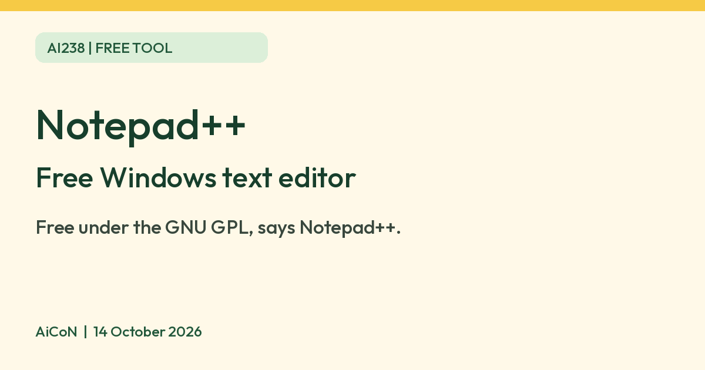
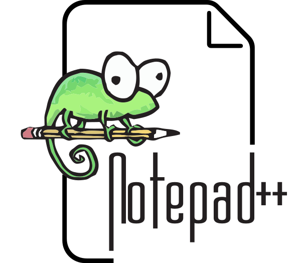

Notepad++: free text editor for Windows
Notepad++ says it is free and under the GNU GPL. It runs on Windows, and its 2026 auto-updater incident is worth knowing about.

Notepad++ logo

What it is
Notepad++ is a text editor for Windows. Its homepage calls it "a free source code editor and Notepad replacement that supports several programming languages". You can use it for plain notes and text files too. It is not an AI tool. We included it because it is a free tool from an official source.
Is it free?
Yes. The homepage says it is "free (as in free speech and also as in free beer)" and is governed by the GNU General Public License. We found no paid tier on the pages we read.
Which devices
- The homepage says it runs in the Microsoft Windows environment. We found no Mac, Linux or phone version on the official pages we read.
- The downloads page lists v8.9.8.1 as the current stable version.
Security note
- In February 2026 the Notepad++ site posted that its auto-updater component (WinGup) was exploited after a compromise of its former hosting provider. It says Notepad++ itself was not hacked, that a state-sponsored group selectively targeted specific organisations, and that most users were not affected.
- The February post recommended the v8.9.1 installer at that time and says the installer can disable the auto-updater. For a new installation now, use the current stable download, not that historical version. These are the project's statements, not an independent security audit or a guarantee that updating removes an existing compromise. Organisations that may have been targeted should follow the incident post's enterprise guidance and check indicators of compromise.
- Download only from notepad-plus-plus.org.
Privacy and data
- Notepad++ has a privacy policy for its website. It says the site keeps standard log files (IP address, browser type, time and so on) and that Google, a third party on the site, uses cookies to serve ads.
- We did not find a statement on what the program itself sends. Its auto-updater contacts an update server, according to the incident post.
India
- We found no India-specific availability statement or program age limit on the pages we read. The website privacy policy separately discusses children under 13; that is not a program age restriction.
How to start
- Open the official downloads page and choose the current stable release. Check that the installer matches your Windows system before downloading.
- Read the release notes and security notice. Review the auto-updater option during installation rather than assuming the defaults suit your needs.
- Open a non-sensitive test text file. Save a copy before changing an existing file.
- Check plugin permissions and sources separately before adding plugins. AiCoN has not installed or tested the editor, installer, updater or plugins.
What changed since this post?
Official homepage, downloads, website privacy policy and February security clarification rechecked on 14 October 2026. The stable listing is v8.9.8.1. The incident post's v8.9.1 recommendation is historical, not the current version. Privacy wording here covers the website and does not prove the program sends no data. Logo and licence notice added. No independent incident investigation, installation or India-specific availability test was performed.
Frequently asked questions
Is Notepad++ free?
Yes. Its homepage says so and says it is under the GNU GPL.
Does it work on a Mac or phone?
The homepage says Windows. We found no other version.
Is it AI?
No. It is a text editor. We included it because it is a free tool from an official source.
Sources: Notepad++, Downloads, Privacy policy, Security incident clarification. Checked 14 October 2026.
Logo: Notepad++ logo by Don Ho, vectorised by Vulphere, GPL v2 or later (Wikimedia Commons, file page). Independent guide, not affiliated.